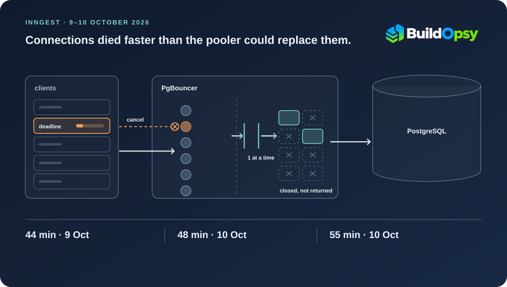

1. Two Outages That Share a Dependency, Not a Cause
Inngest's report opens by refusing the usual framing. The two incidents did not have the same root cause. They had the same architecture: three data centers, work processed in one place, run state stored possibly in another, and a central account database, with the connection poolers in front of it, sitting with yet another provider. Every request can cross a data-center boundary, and each of those boundaries is a hard dependency.
That arrangement buys elasticity. It lets the company add capacity quickly. It also means a single broken path can stop work that has nothing to do with the path. On 9 October the broken thing was a network link. On 10 October it was a connection pool. Neither failure needed the other, and both relied on the same assumption that cross-boundary calls would keep returning.
The window durations this piece uses are computed from the report's own UTC timestamps rather than published as totals. Inngest gives the boundaries, which is enough to do the subtraction honestly and no more.
2. 9 October: The Data Center That Kept Working Inside
At 21:05 UTC one provider lost connectivity between its data center and Inngest's other data centers, in both directions, and lost outbound internet access as well. Internal traffic inside that building kept working. Anything that had to cross its boundary did not.
Inngest's description of the blast radius is the most useful part of this incident, because the third category is the one teams usually miss. Accounts processed in that data center could not reach the primary database to look up account details before processing work, so queue processing stopped, and run state could not be saved because the local state service could not reach its own dependencies outside the building. Accounts processed elsewhere but with run state stored there could not create, load or save that state, so their runs could not progress. Then the third group: accounts with no dependency on that data center at all were still affected, because their events share an event-processing pipeline with the accounts above. Continuously failing work built a large backlog in that shared pipeline, which delayed event processing and function execution for the accounts using it. Accounts with dedicated event pipelines were not affected.
Connectivity returned at 21:49. Queue processing resumed immediately and the backlog drained. A few internal services did not recover on their own and were restarted between 22:26 and 22:38, which is a normal enough epilogue: a network partition ends at a timestamp, but the processes that gave up during it need a separate decision.
One attribution deserves care. The provider's preliminary explanation was an error during a change to its DDoS protection configuration. That is the provider's account as relayed by Inngest, offered before the provider's own full report, and it should be read as a working explanation rather than a finding.
3. 10 October: How a Cancel Becomes a Destroyed Connection
The 10 October failure is the one worth following step by step, because the report's mechanism is specific enough to reproduce on a whiteboard. Both poolers lost all of their database connections at 14:00 UTC, and again at 15:30, and neither could rebuild them.
Several frequently used lookups carried short deadlines. When a lookup's deadline expired while its query was still queued inside PgBouncer waiting for a database connection, the driver cancelled the query and closed its client connection. PgBouncer had nothing running to cancel, because the query had never been given a database connection. It later ran the abandoned query on one, and then closed that connection entirely instead of returning it to the pool.
That last clause is the mechanism. A cancellation that arrives too early does not just waste one query. It converts a healthy database connection into a lost one, and the loss happens after the client has already stopped watching.
Each pooler opens new database connections one at a time. So the refill path is serial while the destruction path is parallel. Treat the inequality as a steady-state sketch rather than a model of this incident: if usable backend connections are destroyed at d per second and a pooler needs t seconds on average to establish a replacement, the refill ceiling is 1/t and the pool drains whenever d > 1/t. It assumes constant destruction and handshake times and ignores the point at which the pooler stops trying. Inngest published neither number. To see the shape of the constraint rather than its measurement: at 100 ms per connection a single pooler refills at ten per second, and at 50 ms it manages twenty.
Two amplifiers arrived together. Both collapses began at the top and bottom of the hour, when cron-scheduled work roughly triples the query rate. At the same moments, a new set of lookups that had been rolled out to all accounts before the weekend began failing in large numbers, adding cancellations to an already busy pool. Inngest reproduced the behaviour in a test environment.
| UTC, 10 Oct | What changed | Signal |
|---|---|---|
| 14:00 | Both poolers lose all database connections | Run scheduling and queue processing stall |
| 14:03 | Database-error alerts fire; incident opened | Three minutes from impact to detection |
| 14:30–14:33 | Poolers restarted | Restart does not raise the refill rate |
| 14:34–14:48 | Processing begins to recover | First window closes at 48 minutes |
| 15:30 | Both poolers collapse again | Same mechanism, same hour boundary |
| 16:09–16:28 | Services moved to poolers run alongside the database | Change of path, not a bigger pool |
| 16:10–16:25 | Processing recovers | Second window closes at 55 minutes |
| 17:10 | Database error rates normal | Errors outlast throughput recovery |
With no usable database connections, run scheduling could not look up accounts and functions, and queue processing stalled for most accounts. Accounts processed in the data center that reaches the database through a different path were unaffected, which is the clearest control group the report offers for 10 October.
4. Why Restarting and Resizing Both Failed
Two obvious remedies are named in the report, and both underperformed for the same reason. Restarting the poolers did not reliably recover them, and raising the pool size did not help either. The bottleneck was the rate at which connections could be opened, not the number the pool was allowed to hold.
The second collapse ended when the team moved all services to connection poolers run alongside the database by the database provider, with processing recovering between 16:10 and 16:25. That works because it changes the path, and the path was the problem.
The mitigation then caused its own smaller incident, on the path that had just been declared healthy. The new route ran through network address translation gateways, and some connections through those gateways were silently dropped. Queries on a dropped connection hung for up to 16 minutes before failing, which intermittently stalled processing, most visibly for cron functions. Inngest's customer-facing window for those intermittent delays runs from 21:07 on 10 October to 04:17 on 11 October. Customers reported delays at 03:01 on 11 October, and the affected service was moved back to the original poolers at 04:17. Gateway routing was improved on 12 October.
Sixteen minutes of silent hang is worse than a fast failure for a scheduler. A dropped connection that errors invites a retry. One that simply stops answering consumes a worker slot and a deadline, and the operator learns about it from the customer.
5. What the Upstream Record Actually Says
Inngest's root-cause section links the pgx driver's interaction with PgBouncer to an open issue in the pgx repository. I read that issue, and the honest summary is that Inngest's account is a well-documented instance of a problem the upstream project has not resolved.
Issue 1780 was opened on 26 October 2023 by a user running a pgxpool in front of PgBouncer and was still open at the latest comment in February 2026, more than two years later. The maintainer could not reproduce the reported connection growth and initially said it did not look like the pool was overfilling. His explanation of the boundary is concrete: pgxpool considers a connection slot available once the termination message is sent and the local side is closed, while the server-side process may take a while to finish. On cancellation he is explicit that pgx sends a terminate message and then closes the local end immediately.
A third-party engineer who reproduced the symptom at load in July 2025 reached a narrower conclusion than "pgx leaks sockets." Their measurement was that pgx closes sockets correctly and established connections stay within about twice the pool size, the doubling coming from cancel requests. What they found instead was a large set of client sockets in a half-closed state, with PgBouncer holding the server side open. Their hypothesis is that PgBouncer, being single-threaded and able to start one new server connection at a time, finishes a login for a connection whose client gave up long ago, notices the client is gone, and discards the fresh backend connection.
Read alongside Inngest's account, the two descriptions are compatible on the part that matters operationally: a client that abandons a queued query can cost the pool a database connection, and the pool's refill rate is serial. What upstream does not offer is a confirmed root cause, and no reader should take Inngest's narrative as proof that the general interaction is solved.
The remedies that thread reports as helpful are worth listing because they are all rate controls rather than capacity controls. Setting PgBouncer's query wait timeout at or below the client's timeout, so the pooler stops holding work the client has already abandoned. Running more PgBouncer instances, since one instance can only start one new server connection at a time. Adding client-side adaptive throttling or backoff when connections are failing, which the same engineer later reported was not enough on its own. And in pgx v5, replacing the default cancellation behaviour with a context watcher handler that sets a connection deadline instead of closing immediately, which they said made a huge difference in their load test.
6. The Failure After the Failure: Runs That Never Failed
The report's root-cause section contains a sentence that deserves more attention than the pool mechanics. Internal failures counted against functions' configured retries, and a step that failed permanently because of an internal error left its run in a Running state instead of marking it failed. onFailure handlers did not fire. Functions waiting on that run through step.invoke were not notified.
That is a contract break, not an availability number. A durable execution engine sells a promise that every run reaches a terminal state and that failure handlers run. Under this bug the engine could hold a run in Running indefinitely, after consuming the retry budget it was given. The customer's retry allowance was spent on the platform's own faults, and the terminal transition that would have told anyone what happened never arrived.
The recovery instructions confirm the state of those runs. Affected runs will not continue on their own, and customers can cancel and replay them, with the caveat that a replay starts from the beginning, so steps that already completed run again. Anyone with non-idempotent side effects in a completed step had a decision to make that the platform could not make for them.
Running. The first stops self-inflicted faults from eating customer budgets. The second needs care, because an expired lease does not prove the work stopped. Fence the lease first: mark the run failed only when the engine can reject late writes from the old lease, or when the step is confirmed not to be in flight. Without that fence, a worker that is still running can land side effects after the run is marked failed, and the replay produces a second copy of them.7. What Inngest Changed, and the Part That Is Still a Trade
Four fixes are listed as shipped or in progress, and they map cleanly onto the mechanism. Lookups no longer cancel queries waiting in the pooler: a deadline now ends the caller's wait without cancelling the underlying query, which removes the trigger on the lookups involved. Internal failures no longer leave runs in Running. Gateway routing was improved and codified in infrastructure configuration. Status-page communication now starts when an internal investigation begins rather than later.
The structural change is the one to watch. Inngest is consolidating onto a single data center that acts as a single cell, which removes the cross-data-center failure class that caused the 9 October incident. Through the end of the year the durable-execution engineers are focused solely on that migration and on reliability, including published SLOs for each part of the platform and rolling deploys across cells.
That is the right call for this class of failure, and it is still a trade. Consolidation trades one failure shape for another: fewer paths that can break, and more consequence when one does. The mitigations named alongside it are narrower than that risk: published SLOs for every part of the platform, and rolling deploys across cells. Those make a degraded cell visible and keep a deploy from landing on more than one at a time, but neither bounds how much a single cell holds. A single data center without that bound is not a smaller failure domain, it is a larger one.
Inngest published a second report on 20 October, five days after this one, and it is worth keeping the two apart. That incident had a different root cause: a connectivity disruption between application infrastructure and the database, which stalled database requests in two windows, 13:00–13:15 and 15:20–15:35. It became an availability incident because event-ingestion services exhausted their memory during the disruption and their startup required a database connection, so they could not return to service while connectivity stayed impaired. The company describes the fix as hardening those two dependencies and gives no connection counts or error rates. The distinction matters here: a single cell removes the cross-data-center class, and it does not remove this one.
Three guardrails I would add on top of what the report commits to:
- Alert on net connection drain, not pool utilisation. Graph opens and closes per pooler per second and alert when the close rate exceeds the open rate for a sustained interval. A pool at 30% with a negative slope is in more danger than one at 70% that is stable, and utilisation alone shows neither.
- Bound the wait, not just the query. PgBouncer's
query_wait_timeoutdisconnects a client whose query has not been assigned a server within the limit. Inngest describes what follows: the pooler runs the abandoned query and then closes that connection. The July 2025 analysis puts the waste a step earlier, with the pooler finishing a login for a client that has already gone and discarding the fresh backend connection. A pooler timeout set below the client's own deadline is meant to remove the entry before that point, so the queued request never runs and the driver sees a disconnect rather than a clean error. That ordering is the reason for the setting, not proof that it preserves backend connections, and the same load test reported that lowering the timeout helped without being enough on its own. Test it against the driver's real cancellation path before adopting it. - Rehearse the degraded state, not just the rollback. The NAT-gateway problem was invisible until load arrived: connections dropped silently and queries hung for up to 16 minutes. A failover drill that measures hung-connection duration, not just successful requests, would have caught it in a test hour rather than at 03:01.
8. The Verdict
This incident had three different clocks and only one of them is the headline. Execution halted for 44 minutes on 9 October. Scheduling stalled for 48 and then 55 minutes on 10 October. Stranded runs stayed in Running well past both, because the state machine had no path out, and they only left it when someone cancelled and replayed them.
The disclosure is unusually good on mechanism and unusually quiet on scale. Inngest gives exact timestamps, names the pgx and PgBouncer interaction, and says it reproduced the behaviour. It gives no connection counts, no pool sizes, no affected-account totals, no backlog depth and no revenue figure, so any cost estimate for this outage would be invented rather than derived.
The engineering lesson is not "use a bigger pool." Inngest's fix follows from the rate mismatch, and so does the more uncomfortable one: a system that owns the retry budget also owns the obligation to report a terminal state, even when the failure is its own.
The deadline protected the caller. In the sequence Inngest reproduced, an expiry in the queue could cost the pool a connection.
For the arithmetic, the connection pool calculator models capacity per pooler against arrival rate and wait limits, the queue backlog drain calculator covers the recovery side, and the Postgres in production course has a lesson on pooling with PgBouncer math. Supabase's connection-side scaling story is the closest case study on this site for the capacity-versus-rate distinction.
Sources and Method
Timeline, impact windows, root-cause mechanism, remediation and the runs-left-running statement come from Inngest's incident report for October 9 and 10, 2026, published 15 October 2026 by Lakshmi Kasinathan, Riadh Daghmoura, Muzammil A. and Justice O. The separate 20 October incident, its two windows and its root cause come from Inngest's report published 23 October 2026 by Bruno Scheufler; it is not attributed to the pgx or PgBouncer interaction. Window durations of 44, 48 and 55 minutes are Buildopsy arithmetic on the report's UTC timestamps, not figures Inngest published. The refill model at 100 ms and 50 ms per connection is a labeled illustration of the serial refill constraint; Inngest disclosed no connection counts, handshake timings, pool sizes or customer totals. The 9 October provider explanation is the provider's preliminary account as relayed by Inngest, and the provider's full report was outstanding at publication. Descriptions of pgx and PgBouncer behaviour are attributed to the upstream issue and to the third-party analysis in its comments, not to Inngest. The query_wait_timeout behaviour described in the guardrails is from PgBouncer's configuration documentation, not from Inngest's report.
- Inngest: Incident report for October 9 and 10, 2026 — cross-data-center network and database connection failures (15 Oct 2026)
- Inngest: Incident report for October 20, 2026 — event ingestion and processing disruption (23 Oct 2026)
- jackc/pgx issue 1780: Runaway connection attempts with pgxpool (opened 26 Oct 2023; open at the latest comment, Feb 2026)
- PgBouncer documentation: configuration parameters, including connection wait timeouts
- Buildopsy: Supabase Postgres at scale — the connection-side pressure